Joie Coffee has been in business in the heart of Saigon for over six years. They focus on providing their customers with tasty and healthy drinks and high-quality coffee bean products.
During 2020, as the Corvid-19 pandemic hit the city, people limited their hanging-outs and decided to order drinks delivered to home. This situation inspired Joie Coffee to expand the business digitally. With a website and a mobile app, Joie Coffee Shop owners hope to reach a larger audience and open another safe ordering channel.
Objectives
1. Create a visual style that matches the Joie Coffee brand 2. Design website pages to help users gain information related to Joie Coffee 3. Design a mobile app to help users pre-order drinks and coffee bean products
User personas were created before I began to design Joie Coffee's website and mobile app. The information for constructing those characters came from my interviews with three loyal customers and other discussions with the owners.
User persona #1:
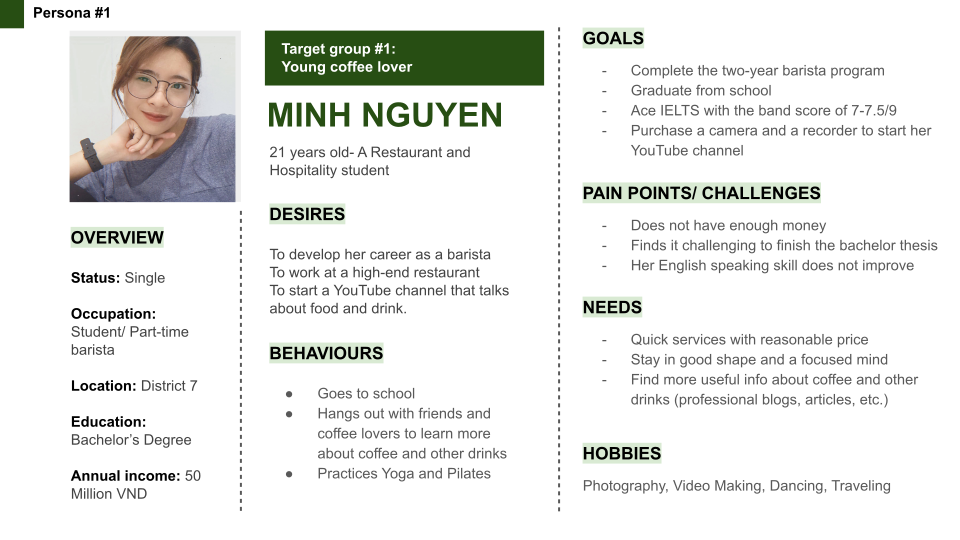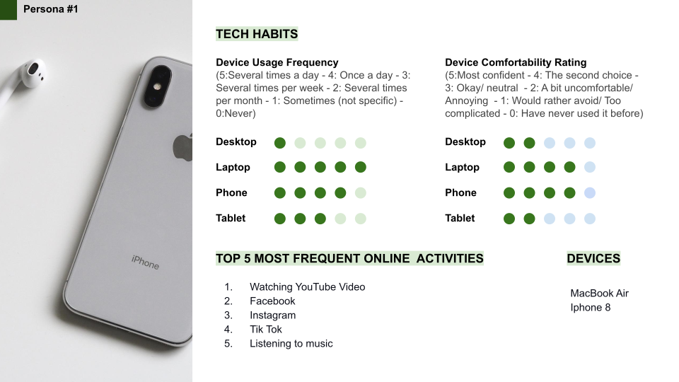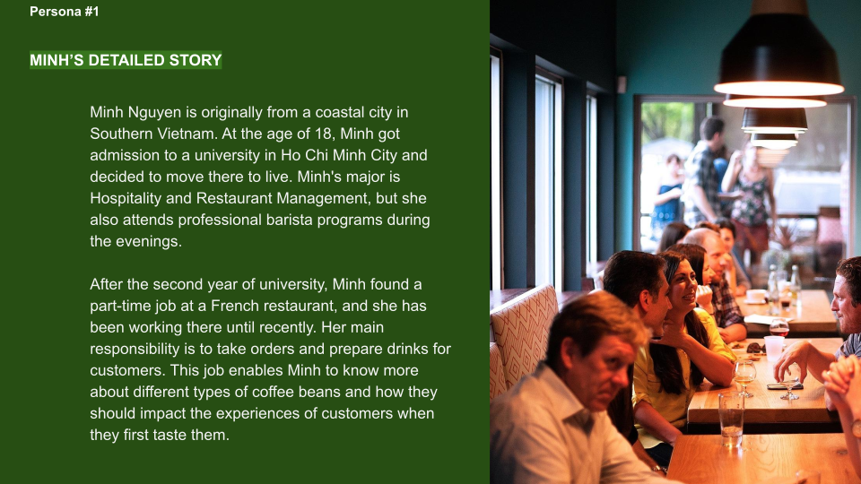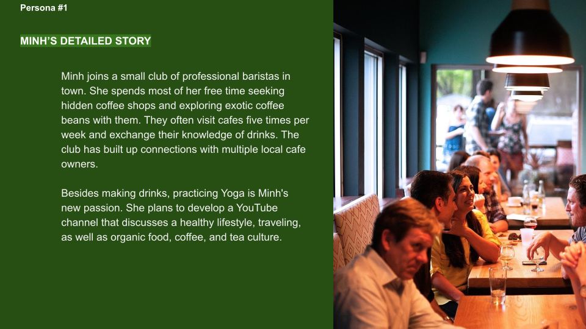
User persona #2:
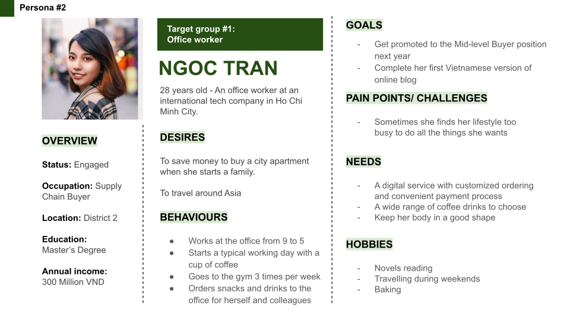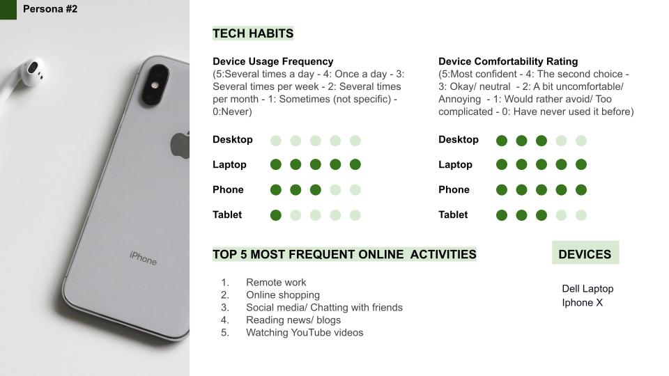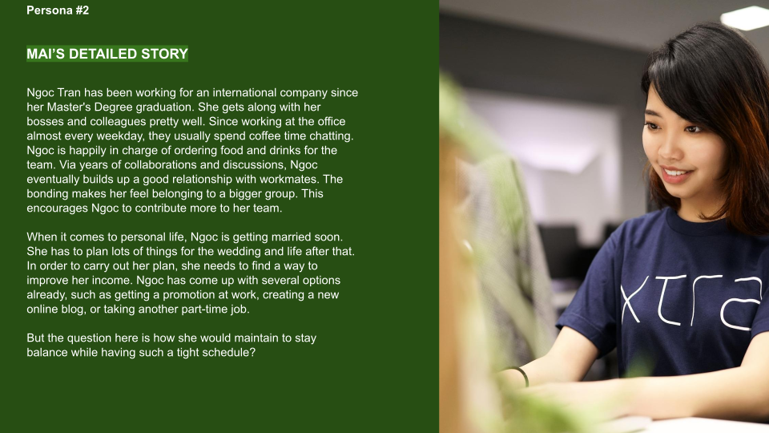
User persona #3:
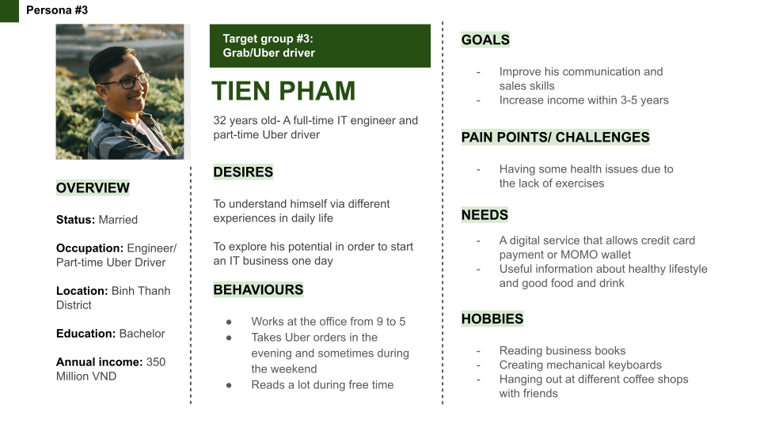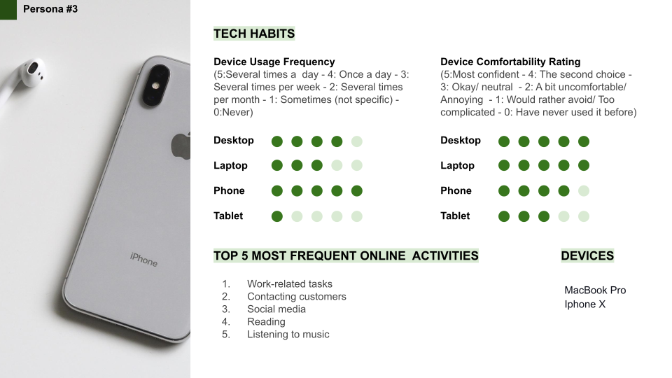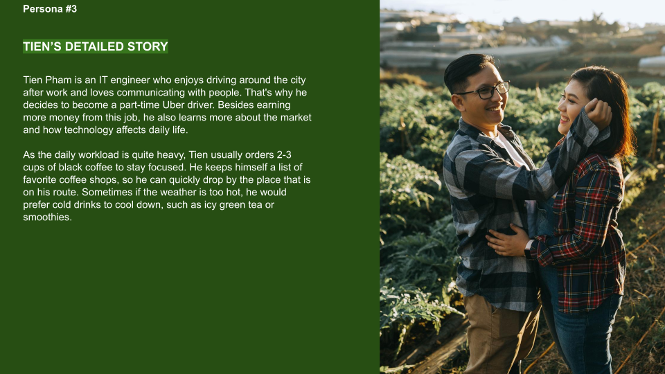
Visual Style
I created a visual style based on Joie Coffee logo. The UI would eventually develop from this initial attempt.
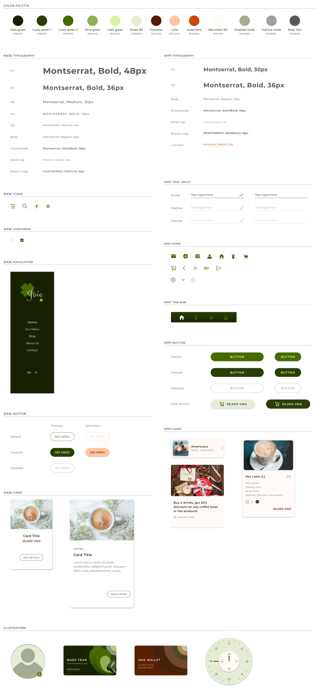
Website
Sitemap
Joie Coffee owners reached out to me to design a website that would showcase their products and provide the audience with necessary information. People can quickly learn about the coffee shop and develop trust with the brand.
The Joie Coffee Website should be used to help the audience (as well as potential customers) get familiar with the menu, branding story and messages (via About Us content and blog posts), and contact the shop for further information before visiting the store.
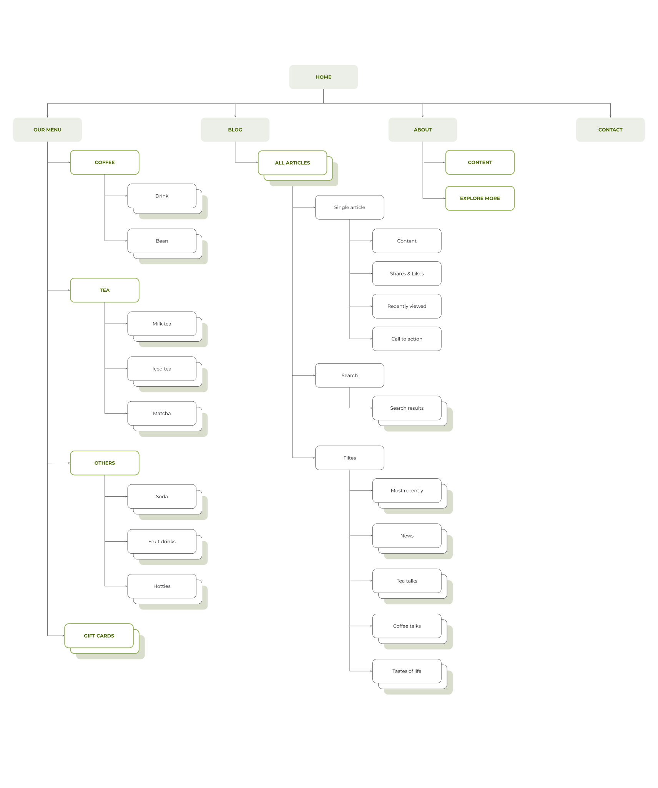
Website
UI Design
The following screens below provides Joie's target audience with necessary information about the coffee shop. One can explore the main menu with four distinctive sections, including Coffee, Tea, Others, and Gift Cards. However, the website is not designed for online ordering purpose.
LANDING PAGE
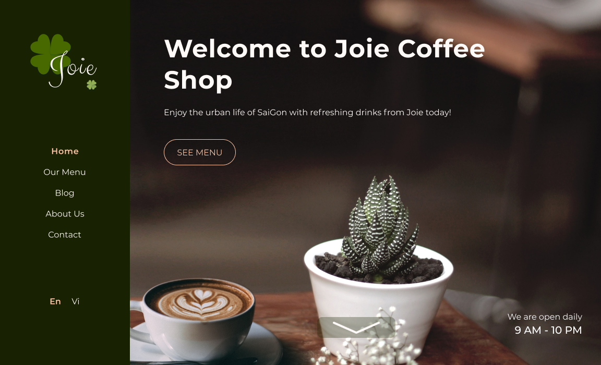
MENU / COFFEE
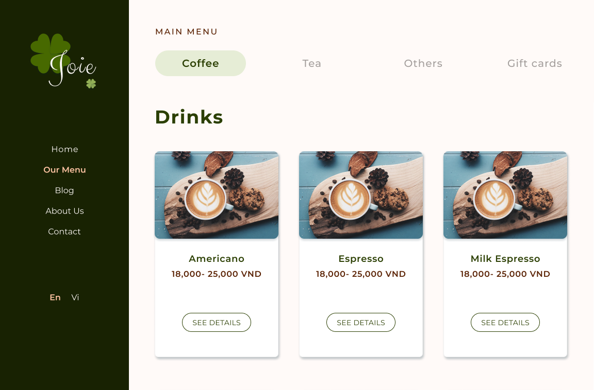
Joie Coffee's website is where the owners share their branding voice and positive messages related to their expertise and healthy lifestyle via blog posts. By looking at the blog section, you will find different topics, such as Coffee Talks, Tea Talks, Tastes of Life, and News.
The website also encourages you and other readers to like and share those posts on social media.
The Joie Coffee Mobile app is considered to be used by the customers who have been already familiar with products of the shop. This app encourages users pre-order drinks and set pick-up time before arriving at the store.
Since local people still keep their habit of traveling around the city on their own motorcycles during the Corvid-19 pandemic, their demand for drinks is high. They just come to order and take away. With the Joie Coffee app, a customer can visit the store to get drinks quickly, thereby saving lots of time staying at the place and avoiding direct human contact.
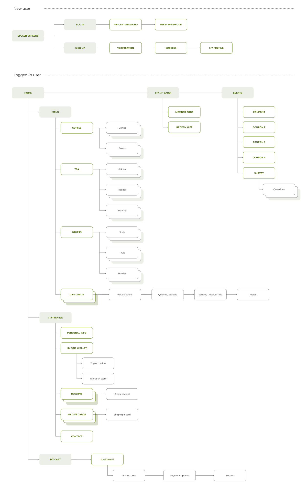
Mobile App
UI Design
Joie Coffee also needs a mobile application that serves two purposes. By having an app on the phone, users can pre-order drinks before coming to the shop to pick them up and collect their stamps online. This way helps shorten the waiting time and cut down on human contact.